k-Day 160｜長治久安
只剩65公里就到阿克蘇。在庫車時已經拿到旅行社的LOI，明日預計停留一天，申請吉爾吉斯和塔吉克的電子簽證。
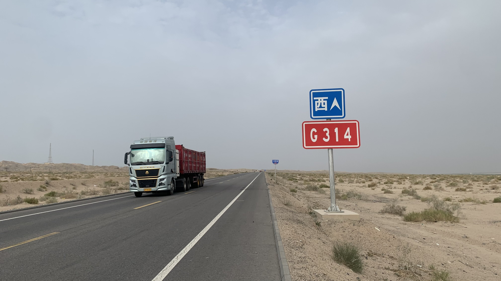
道路兩旁被黃沙覆蓋。
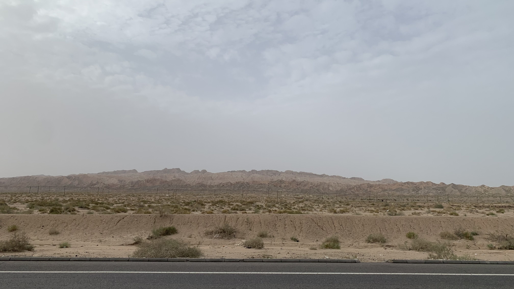
左手邊有座山。
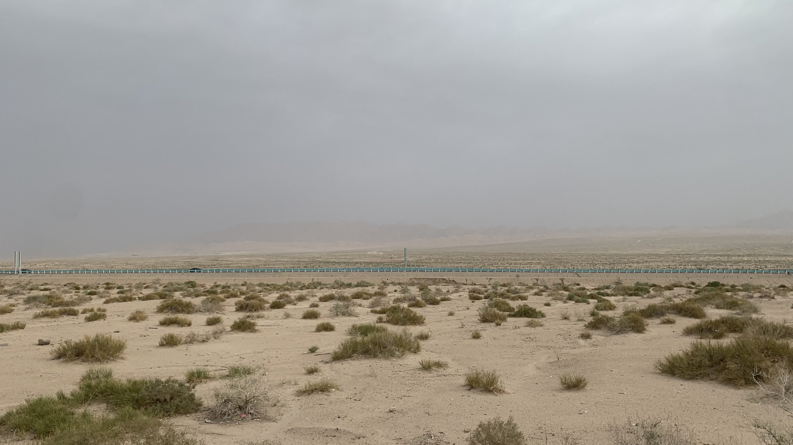
右手邊與高速平行的後方同樣是山。按著這樣的地勢，玄奘要往西走，果然還是這條路線比較合理。
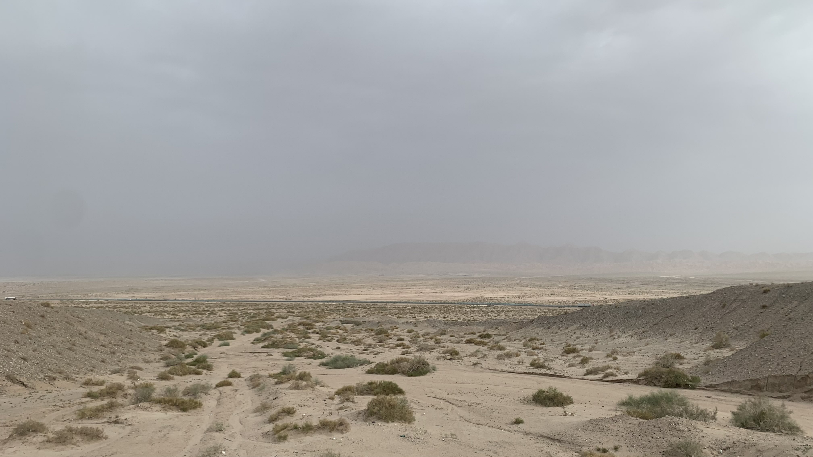
314國道有些微的起伏，右邊的312高速擁有更平緩的路面。
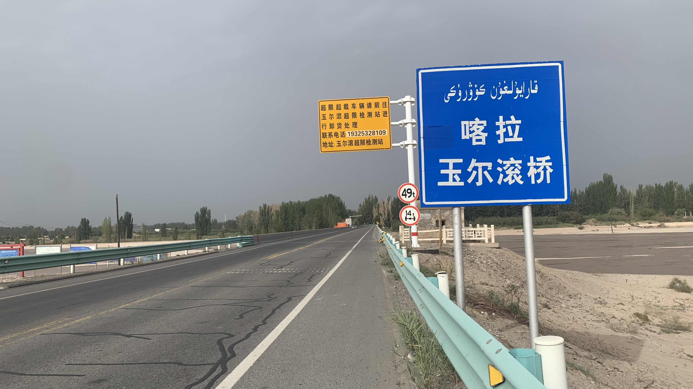
不久後經過一座乾涸的河床，上方的橋叫做「喀拉玉爾滾橋」。
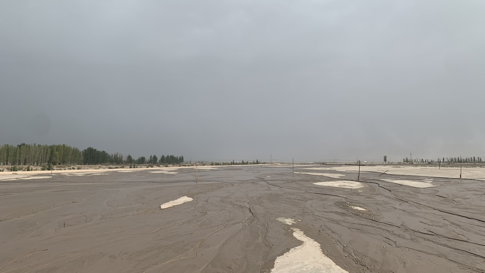
這座貌似乾涸的河床旁邊有著「流沙河」的標誌，河面有三藏一行人的雕塑。
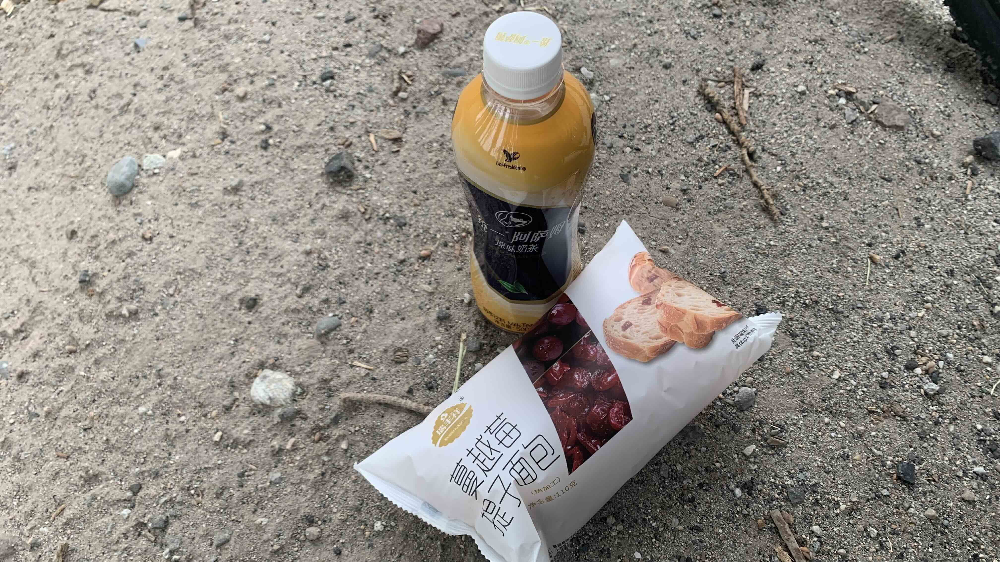
過了流沙河就進入人口密集區，在商店買了葡萄麵包和奶茶當早餐。
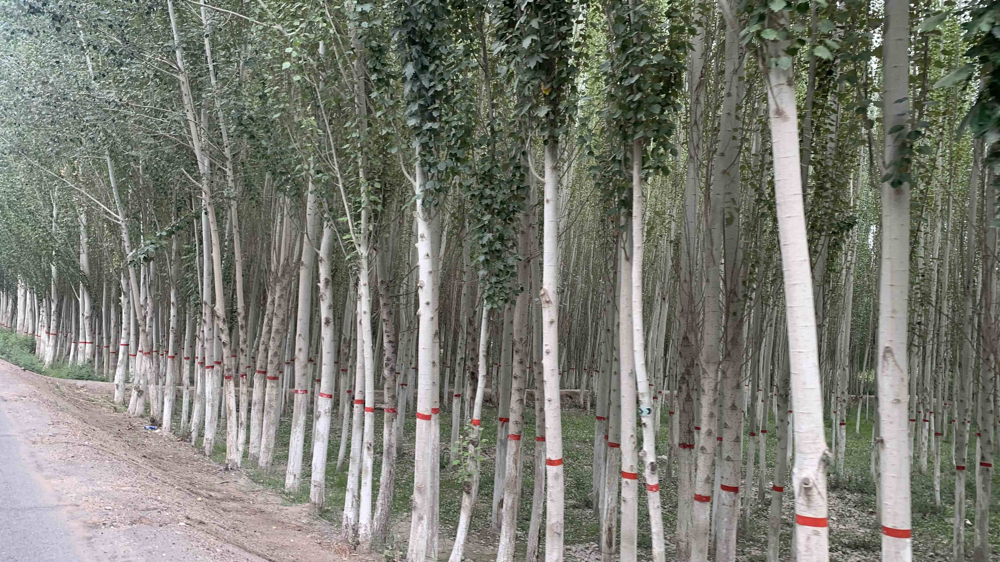
路樹的樹幹下方都漆上白漆，並且在同樣的高度黏上紅膠帶。
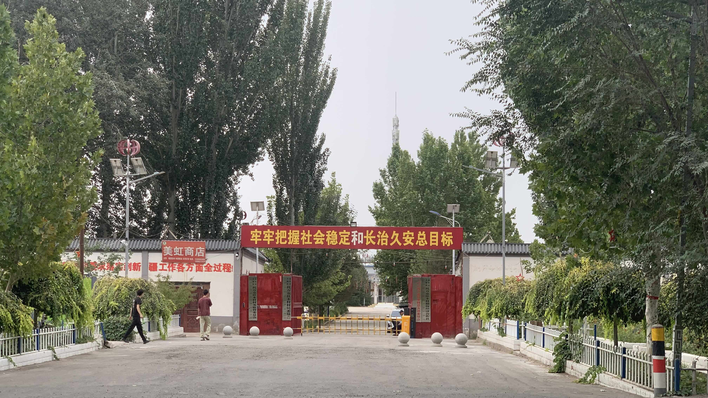
鎮上有許多刻板印象標語，沒有多拍，但是可以看出大國希望此處原住民積極融入文化制度的訴求。
之所以特地拍下這個標語，主要是「牢牢把握社會穩定和長治久安總目標」這句標語很符合我感受到的新疆。在烏蘭巴托的青旅認識一位江蘇地區的小夥伴，他說小時候對新疆的印象是相當可怕的。首先那裡有黑社會，其次維族人是很兇的，在那裡被「硬做生意」甚至會不敢拒絕。當時聽他這樣說，我腦中浮現幾十年前還是幼童的我，在台灣鄉下遊戲區被老人關在廁所裡，要求我付10元清潔費才能離開的記憶。
此刻的新疆，至少對一個騎自行車旅行的人而言，確實是相對安全的。從哪裡觀察出來呢？首先是一路上都能看到微小的違法行為，比如沒戴安全帽、惡意逼車、逆向超車，以及餐廳裡出現的點餐爭執等等，合理推斷「守法」的概念尚未融入當地人的日常習慣；其次是在千佛洞遇到想闖入國家重點維護的一級古蹟禁地的人，還有在排隊處就開始為難工作人員的遊客等。當天回到民宿和張劍分享這件事，我們都認為這群人要是在北京絕對不敢在天安門或紫禁城對著工作人員大吼「能不能進去？」從我的觀察來看，距離國家權力中心越遠，人們對法律與國家權威的感受似乎也越鬆散。還有一點，也許只是我的主觀感受，但是很多次的從旁觀察的眼神和停頓，當地族群之間顯然有著某種未能說出口的情緒。這種情緒很隱晦，只是來觀光旅遊無法察覺。之所以會產生這樣的聯想，是因為我自己經歷的台灣，也曾經處在類似的社會轉型階段。新疆不時會讓我想起過去的台灣，一個不明究理的人若是在當時到台灣旅遊，只會看到經濟蓬勃發展、消費提升，基礎建設與公共交通逐漸與先進國家接軌，甚至在文化上都有種國家鼓勵開放與擁抱少數族群傳統的氛圍。即便詢問當時的台灣人，我想也很少有人能完整說出台灣被壓抑許久的問題。
基於上述觀察，新疆的秩序感並非單純由「人民天生守法」構成，反而可能與近年的治理方式、硬體建設及制度性轉變有關。
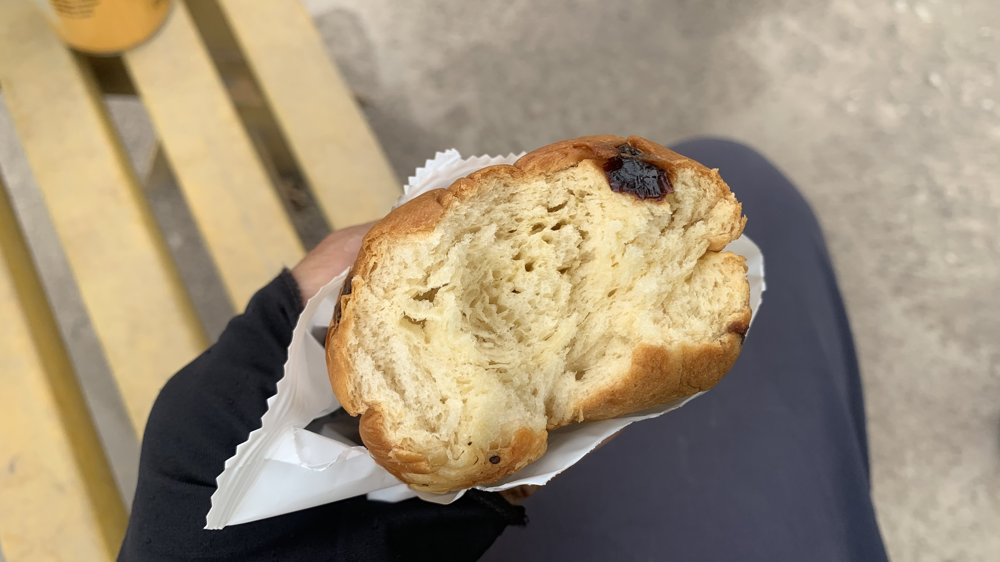
這麵包吃起來沒滋沒味，真心不懂怎麼會小氣成這樣。葡萄乾只灑在表層就算了，從剖面看，那些葡萄乾甚至不是完整的，而是被切片的葡萄乾？！
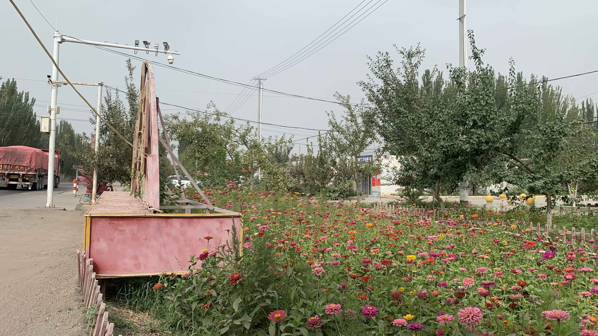
之前餐廳老闆的弟弟和我說，等我到了南疆會發現大家的院子都整理的很乾淨，而且會種上漂亮的花。這是真的。除了每家每戶門口的花，連社區花圃都照顧得很好。
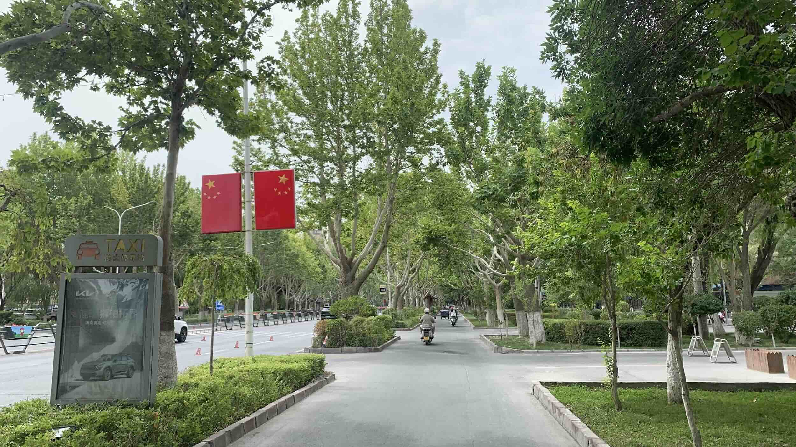
阿克蘇到了。和前面經過的所有新疆市鎮一樣，綠意盎然。行道樹和人行道規劃的相當完善。
除此之外沒有任何進一步特色，怎麼會這樣？難道這是新興城市嗎？
今日花費：中國移動話費 1、晚餐 36.6、茶芭蕾 29.5、住宿（2晚） 70 元
8月12日花費：午餐 18、護照影印 10、咖啡 22、飲料 20.3、晚餐 44.8、吉爾吉斯簽證 1663、塔吉克簽證 1655 元
裝備花費：能量棒／膠＋肌貼（3捲） 779.82、蛋白粉 288.09、鐵劑 39.13、維生素 住宿（2晚） 70 元